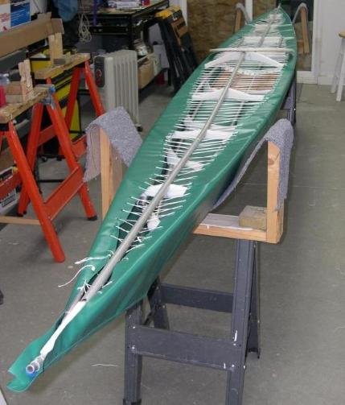
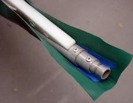
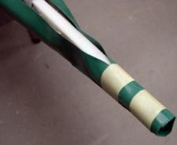
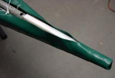

| Covering The Deck (1 of 5) | Menu Previous Page Next Page | |
|

Turn the frame over and place on sawhorses. A carpet cradle or a set of foam carriers are used to hold the frame upright. Notice how close the lacing is to the ends.
|

  |
Trimming and gluing the Ends
1. Trim the excess PVC from around the stems, leaving 1/2" extended past the ends.
2. Loosely overlap the skin around the stem and mark the area to be glued. After MEK and cement is applied to both surfaces, overlap and secure with masking tape. Insure that the overlap is quite loose as the stem tube will slide in and out of this enclosure during assembly.
3. Apply heat and pressure to insure a good bond. Duplicate the process at the stern.
|
Sea Rider